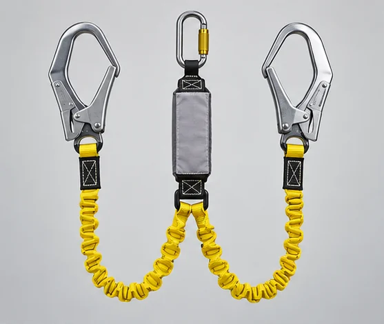
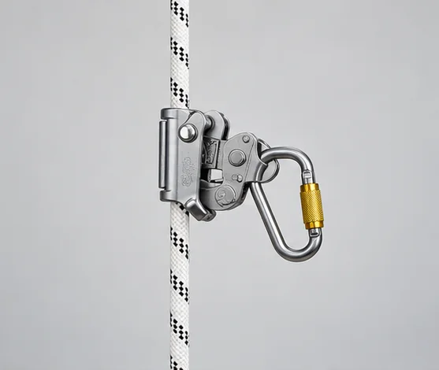
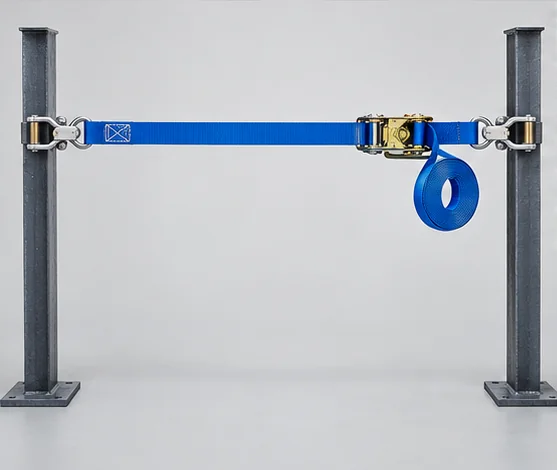
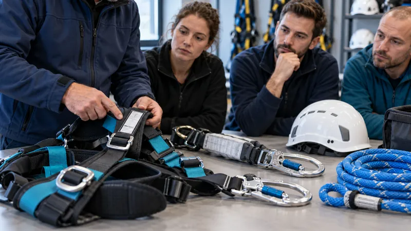

CONSULTEAM SECURITY · SECU37Travail en hauteur · Port du harnais
Support participant · vendredi 2 octobre 2026 · 7 h
Travailler en hauteur avec méthode
Ce support vous accompagne pendant la journée : repérer les risques de chute, choisir la prévention, contrôler et utiliser les EPI, comprendre l’ancrage provisoire et anticiper le secours. Les notices des fabricants, les consignes du site et l’analyse des risques décident des gestes autorisés.
Objectifs de la journée
Identifier les risques de chute selon l’environnement et la nature des travaux.
Maîtriser les règles de sécurité aux accès, travaux et déplacements en hauteur.
Reconnaître les moyens de protection appropriés aux conditions de travail.
Accéder en sécurité à un poste de travail en hauteur.
Utiliser les EPI en toute sécurité.
Réaliser un point d’ancrage provisoire.
Source : programme CONSUL TEAM SECU37 « Travail en hauteur – port du harnais ».
Illustration générée — non contractuelle.
> 10 %des accidents du travail sont dus aux chutes de hauteur (2019)
2e causede décès professionnels
54 %des décès par chute de hauteur surviennent dans le BTP
La tâche, sa durée, ses outils et les déplacements nécessaires.
2 · Repérer
Accès, bords, ouvertures, surfaces fragiles, obstacles sous la zone, circulation des tiers, coactivité.
3 · Évaluer
Sol, vent, pluie, visibilité. Arrêter ou adapter le travail si les conditions compromettent la sécurité.
4 · Choisir
Un poste et un accès sûrs. Supprimer d’abord le risque, puis la protection collective adaptée.
5 · Décider
Si un système individuel est indispensable : définir son usage, le mode opératoire et le secours avant le début des travaux.
Trois usages à distinguer
Usage
But
Question à se poser
Retenue
Empêcher d’atteindre la zone de chute
La longueur et le cheminement rendent-ils l’accès au bord impossible ?
Maintien au poste
Travailler en appui ou en position définie
Faut-il en plus un système distinct d’arrêt de chute ?
Arrêt de chute
Arrêter une chute possible et retenir la personne
Système, ancrage, espace libre et secours sont-ils adaptés ?
Un harnais seul ne constitue pas une protection. Un système d’arrêt de chute comprend un ancrage, un harnais antichute et une liaison avec absorption d’énergie, compatibles entre eux.
Cadre réglementaire
Ce que dit le Code du travail
Principes généraux de prévention
L’employeur prend les mesures nécessaires pour assurer la sécurité et protéger la santé des travailleurs (L. 4121-1). Il applique neuf principes (L. 4121-2) :
Éviter les risques
Évaluer ceux qui ne peuvent être évités
Combattre les risques à la source
Adapter le travail à l’homme
Tenir compte de l’évolution de la technique
Remplacer ce qui est dangereux
Planifier la prévention
Protection collective avant protection individuelle
Donner les instructions appropriées
Travaux temporaires en hauteur (R. 4323-58 et suivants)
Garde-corps (R. 4323-59) : rigides, entre 1 m et 1,10 m, avec plinthe de butée de 10 à 15 cm, main courante et lisse intermédiaire à mi-hauteur, ou moyen de sécurité équivalent.
Système d’arrêt de chute (R. 4323-61) : lorsque la protection collective est impossible ; pas de chute libre de plus d’un mètre ; le travailleur n’est jamais seul ; notice de l’employeur précisant ancrages et modalités d’usage.
Météo (R. 4323-68) : pas de travaux temporaires en hauteur si les conditions météo ou de l’environnement peuvent compromettre la sécurité.
Vérification des EPI (R. 4323-99 à R. 4323-103) : vérifications périodiques par personne compétente, au moins annuelles pour l’antichute selon l’INRS ; elles ne remplacent jamais le contrôle avant emploi.
Aucune hauteur minimale n’est fixée : dès qu’une chute d’un niveau à un autre est possible, la situation est à évaluer. Synthèse : INRS — réglementation du travail en hauteur.
Matériel
Reconnaître les composants
Harnais antichute (EN 361). Ajuster toutes les sangles, fermer toutes les boucles, utiliser le point d’attache prévu par la notice.

Longe double avec absorbeur. Réserver la capacité de déploiement de l’absorbeur ; au moins un brin reste connecté à un point autorisé lors des transferts.

Antichute mobile. Support d’assurage compatible, sens de montage et connecteurs prescrits, test de blocage avant usage.

Ligne de vie temporaire. Uniquement sur ancrages et supports validés ; respecter portée, tension, nombre d’utilisateurs et tirant d’air de la notice.Sangle d’ancrage. Protéger contre les arêtes, éviter la charge triaxiale des connecteurs, vérifier la structure porteuse.Barre d’ancrage de baie. Dispositif manufacturé : dimensions admissibles, appuis, verrouillage, sens de charge, bâti résistant, accès condamné.
Illustrations générées pour la session : à confronter aux équipements réels et aux notices des fabricants.

Le marquage et l’étiquette d’identification se lisent avant chaque emploi. Illustration générée — non contractuelle.Contrôler
Avant et après chaque emploi
Avant l’intervention
Une anomalie impose l’arrêt, l’isolement du matériel et le signalement.
Après l’intervention
Repère : la vérification périodique ne remplace jamais le contrôle avant chaque utilisation. Ne remettez jamais en service un équipement douteux de votre propre initiative. Un équipement qui a arrêté une chute est retiré de l’utilisation et traité selon la notice.
Vos coches sont mémorisées uniquement sur cet appareil.
Ancrage · tirant d’air · pendule
Ne pas improviser le point d’accroche
Choisir un ancrage temporaire
Définir le système : retenue, maintien ou arrêt de chute.
Identifier le support : nature, état, arêtes, direction de charge, accès.
Employer un dispositif prévu : sangle d’ancrage, ligne temporaire, barre de baie… conforme à sa notice.
Placer haut : réduit la chute libre, le tirant d’air et le pendule.
Point « de fortune » : un élément rencontré sur site n’est pas un ancrage par défaut (garde-corps, tuyauterie, chemin de câble, mobilier, maçonnerie friable…). En cas de doute : aucun accrochage.
Tirant d’air — saisissez les valeurs de la notice
Ne retenez jamais un chiffre générique : lisez la notice du système exact. Le calcul additionne quatre composantes.
Facteur de chute
Facteur = hauteur de chute ÷ longueur de liaison (0 à 2 dans le modèle simple).
Pendule et arêtes
Rester sous l’ancrage : limiter le déport latéral.
Repérer les arêtes vives et les obstacles sur la trajectoire.
Déplacer l’ancrage ou le cheminement, protéger l’arête ou choisir un équipement explicitement adapté.
Une gaine improvisée ne valide pas le système.
Secours
Préparer avant la chute
Avant
Le plan indique qui alerte, qui sécurise la zone, qui intervient, avec quel matériel et par quel accès.
Pendant
Alerter immédiatement selon les consignes du site. Empêcher une seconde chute. Une personne suspendue doit être secourue rapidement.
Limites
N’appliquez une manœuvre que si les intervenants sont formés et que l’opération est réalisable en sécurité. Ne jamais laisser seul un salarié utilisant un système d’arrêt de chute.
Exercices
À faire en séance
A — Préparer une intervention en toiture
Situation : intervention courte sur une toiture terrasse. Accès par échelle mobile. Ouverture non protégée visible. Le vent se lève. Le point d’ancrage proposé n’a pas de dossier.
Relevez au moins cinq risques ou inconnues.
Proposez l’ordre de décision avant d’accéder à la toiture.
Écrivez trois informations à demander au responsable du site.
B — Choisir le dispositif
Indiquez la première piste de prévention et les informations manquantes :
Travail régulier sur plateforme sans garde-corps.
Inspection près d’un bord, avec possibilité de rester hors de la zone dangereuse.
Déplacement sur une structure où la chute reste possible.
C — Contrôle d’EPI
Sur trois matériels présentés par le formateur, relevez : identification, usage prévu, état visible, contrôle fonctionnel, date / statut de vérification, décision d’utiliser ou d’écarter.
Matériel
Constat
Décision et motif
A
B
C
D — Briefing de secours
Sur la zone d’exercice, complétez : contact d’alerte · adresse et accès des secours · responsable de zone · matériel de secours · personne compétente · mode de communication · critère d’arrêt de l’exercice.
Si une rubrique manque, l’activité se limite à une démonstration sans exposition au risque de chute.
Nœuds et ancrage
Huit, cabestan, demi-cabestan + mule
Les fiches pas-à-pas, les contrôles croisés et les vidéos sont réunis sur une page dédiée.